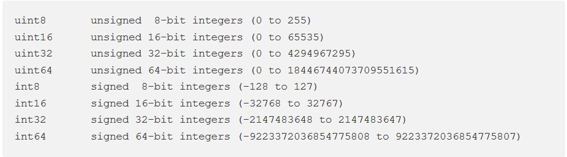
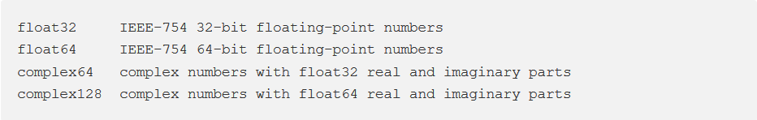

ΔΩΡΕΑΝ ΜΑΘΗΜΑΤΑ GO

Στο σημερινό δωρεάν μάθημα προγραμματισμού GO, θα δούμε τα διάφορα data types
(είδη δεδομένων) που υποστηρίζει η συγκεκριμένη γλώσσα όπως και πως ορίζουμε constants –
δηλαδή μεταβλητές που η τιμή τους δεν μπορεί να αλλάξει μετά από την πρώτη ανάθεση τιμής.
Επίσης θα δούμε τι σημαίνει το scope και πως επηρεάζει την πρόσβαση στις μεταβλητές.
Επειδή η κάλυψη όλων αυτών των θεμάτων είναι αρκετά μεγάλη, θα την χωρίσουμε σε δύο μέρη.
Αυτό είναι το πρώτο μέρος.
Γενικότερα, τα data types βοηθάνε τον compiler της Go να αποφασίσει τι είδους πράξεις μπορεί να
εκτελέσει στα
δεδομένα. Αν, για παράδειγμα, έχουμε ορίσει δύο αριθμούς να είναι ακέραιοι τότε ο compiler μπορεί
εφόσον
δηλωθεί να εκτελέσει την αριθμητική πράξη της πρόσθεσης, ενώ ανάμεσα σε δύο μεταβλητές έχουν οριστεί
σαν
strings τότε δεν υφίσταται η πράξη της πρόσθεσης.
Θα διαβάσετε στο documentation της Go ή σε διάφορα άρθρα από το Ίντερνετ ότι
η Go είναι στην κατηγορία των statically typed languages. Αυτό σημαίνει ότι ο
compiler της
Go, κατά την ανάπτυξη του κώδικα μας, πριν ακόμα τον τρέξουμε, αν δει ότι κάποιες μεταβλητές
χρησιμοποιούν με λάθος τρόπο το data type των τιμών τους τότε θα παραπονεθεί. Επίσης, από την
στιγμή που ορίσουμε ένα data type σε μια μεταβλητή, αυτό δεν μπορεί να αλλάξει.
Η Go υποστηρίζει αρκετά διαφορετικά είδη δεδομένων. Όσον αφορά τους ακέραιους αριθμούς,
ο πιο συνηθισμένος τύπος αριθμών είναι το int ενώ για τους δεκαδικούς είναι
το float64. Η Go έχει και πιο ειδικές περιπτώσεις αριθμών αν θέλαμε να
χρησιμοποιήσουμε ένα συγκεκριμένο αριθμό bits για να εξοικονομήσουμε μνήμη. Για παράδειγμα, υπάρχει
και
το data type int8 όπως και το int16, int32 και
int64.
Ενώ για τους δεκαδικούς έχουμε την επιλογή ανάμεσα σε float32 και
float64.
Ο παρακάτω πίνακας είναι μια αναλυτική λίστα με όλα τα data types.
Integer Types

Float and Complex Numbers

Πριν δούμε μερικά απλά παραδείγματα με μεταβλητές που ορίζουν αριθμητικά data types,
θα πρέπει να γνωρίζουμε ότι η Go υποστηρίζει τις εξής αριθμητικές πράξεις:
- πρόσθεση – με το σύμβολο ( + )
- αφαίρεση – με το σύμβολο ( - )
- πολλαπλασιασμό – με το σύμβολο ( * )
- διαίρεση – με το σύμβολο ( / )
- υπόλοιπο διαίρεσης – με το σύμβολο ( %)
Ας δούμε ένα απλό πρόγραμμα που χρησιμοποιεί και τις πέντε αριθμητικές πράξεις
αφού έχουν οριστεί σωστά τα data types των μεταβλητών.
Μπορείτε να δημιουργήσετε έναν καινούργιο φάκελο με το όνομα unit4 κάτω
από το src για να γράψετε τα παραδείγματα αυτής της ενότητας.
main.go
package main
import "fmt"
func main() {
var x = 5
var y = 10
fmt.Println("Addition:", y+x)
fmt.Println("Subtraction:", y-x)
fmt.Println("Multiplication:", y*x)
fmt.Println("Division:", y/x)
fmt.Println("Remainder:", y%x)
}
Output
Addition: 15
Subtraction: 5
Multiplication: 50
Division: 2
Remainder: 0
Ας κάνουμε μια μικρή αλλαγή στο πρόγραμμα αντικαθιστώντας τον ακέραιο αριθμό 10 με τον δεκαδικό
αριθμό 10.0
main.go
package main
import "fmt"
func main() {
var x = 5
var y = 10.0
fmt.Println("Addition:", y+x)
fmt.Println("Subtraction:", y-x)
fmt.Println("Multiplication:", y*x)
fmt.Println("Division:", y/x)
fmt.Println("Remainder:", y%x)
}
Output
src\unit4\main.go:8:28: invalid operation: y + x (mismatched types float64 and int)
src\unit4\main.go:9:31: invalid operation: y - x (mismatched types float64 and int)
src\unit4\main.go:10:34: invalid operation: y * x (mismatched types float64 and int)
src\unit4\main.go:11:28: invalid operation: y / x (mismatched types float64 and int)
src\unit4\main.go:12:29: invalid operation: y % x (mismatched types float64 and int)
Έχετε καταλάβει ποιο είναι το πρόβλημα? Η Go δεν μπορεί να μετατρέπει ένα data
type σε κάποιο άλλο αυτόματα για να ικανοποιήσει την αριθμητική πράξη. Οπότε αρνείται
στην ουσία να προάγει στον ακέραιο 5 σε δεκαδικό 5.0 έτσι ώστε να εκτελέσει χωρίς λάθος
τις πράξεις. Αυτή την ευθύνη την αφήνει στον προγραμματιστή. Οπότε αυτό που έχουμε να
κάνουμε είναι να μετατρέψουμε τον ακέραιο αριθμό σε δεκαδικό προσθέτοντας το καινούργιο
data type μπροστά από τον αριθμό, και τον ίδιο τον αριθμό τον βάζουμε σε παρένθεση. Φυσικά
θα ήταν πιο εύκολο για εμάς απλά να το γράφαμε σαν δεκαδικό, αλλά αν αντί για τον αριθμό 5
είχαμε μια μεταβλητή, ο τρόπος να την μετατρέψουμε θα ήταν αυτός. Προσπαθούμε λοιπόν να
τρέξουμε το πρόγραμμα μας ακόμα μια φορά.
main.go
package main
import (
"fmt"
)
func main() {
var x = float64(5)
var y = 10.0
fmt.Println("Addition:", y+x)
fmt.Println("Subtraction:", y-x)
fmt.Println("Multiplication:", y*x)
fmt.Println("Division:", y/x)
fmt.Println("Remainder:", y%x)
}
Output
src\unit4\main.go:14:29: invalid operation: y % x (operator % not defined on float64)
Τώρα βρισκόμαστε μπροστά σε ένα καινούργιο πρόβλημα – το υπόλοιπο της διαίρεσης
λειτουργεί μόνο ανάμεσα σε ακέραιους αριθμούς. Για να μπορέσουμε να υπολογίσουμε το υπόλοιπο
ανάμεσα σε δεκαδικούς θα πρέπει να χρησιμοποιήσουμε το function Mod( ) που ανήκει
στο
πακέτο math. Οπότε προσθέτουμε το πακέτο math στο
import
κάτω από το fmt, και μετά χρησιμοποιούμε την function Mod.
main.go
package main
import (
"fmt"
"math"
)
func main() {
var x = float64(5)
var y = 10.0
fmt.Println("Addition:", y+x)
fmt.Println("Subtraction:", y-x)
fmt.Println("Multiplication:", y*x)
fmt.Println("Division:", y/x)
fmt.Println("Remainder:", math.Mod(y, x))
}
Output
Output
Addition: 15
Subtraction: 5
Multiplication: 50
Division: 2
Remainder: 0
Τώρα το αποτέλεσμα είναι το σωστό. Όπως βλέπετε έπρεπε να κάνουμε δύο πολύ μικρές
αλλαγές στον κώδικα για να λειτουργήσει σωστά.
Η Go μας προσφέρει μερικούς εύχρηστους τρόπους για να ορίσουμε πολλαπλές μεταβλητές.
Ο πρώτος τρόπος είναι να ορίσουμε τις μεταβλητές στην ίδια γραμμή διαχωρίζοντας την μια από την
άλλη με κόμμα. Την ίδια τακτική πρέπει να ακολουθήσουμε και στις τιμές τις οποίες θα τις αναθέσουμε.
Ας δούμε ένα απλό παράδειγμα.
main.go
package main
import (
"fmt"
)
func main() {
flightNumber, destination, cost := "A567", "Rome", 150
fmt.Println("Your flight number is", flightNumber, "with destination to", destination, "and final cost", cost)
}
Output
Your flight number is A567 with destination to Rome and final cost 150
Θα μπορούσαμε, σαν δεύτερη εναλλακτική, να ορίσουμε τις μεταβλητές και ως εξής:
main.go
package main
import (
"fmt"
)
var (
flightNumber = "A567"
destination = "Rome"
cost = 150
)
func main() {
fmt.Println("Your flight number is", flightNumber, "with destination to", destination, "and final cost", cost)
}
Output
Your flight number is A567 with destination to Rome and final cost 150
Στο επόμενο δωρεάν μάθημα σε Go, θα ολοκληρώσουμε την αναφορά μας στα Data types.
Πίσω στις ενότητες GO Programming
Michail Kassapoglou Admin
Γεια σας, είμαι ο Μιχάλης Κασάπογλου και θα σας διδάξω με τον ποιο απλό
τρόπο να προγραμματίζετε σε Python. Ασχολούμαι με την τεχνική εκπαίδευση
σε διάφορες πλατφόρμες, λειτουργικά συστήματα και γλώσσες προγραμματισμού
πάνω από 20 έτη. Κατέχω έναν αρκετά μεγάλο αριθμό πιστοποιήσεων
και σαν Τraining Lead στην Intrasoft έχω την δυνατότητα να αναβαθμίζω συνεχώς
τις γνώσεις μου και να έχω άμεση επαφή με αληθινά projects και εξειδικευμένες
μεθόδους
ανάπτυξης εφαρμογών που έχουν υψηλές απαιτήσεις.
Για τυχόν ερωτήσεις σας μπορείτε να επικοινωνήσετε μαζί μου
στο Michail.Kassapoglou@gmail.com
Σας ευχαριστώ που επισκεφτήκατε τα δωρεάν μαθήματα προγραμματισμού GO.